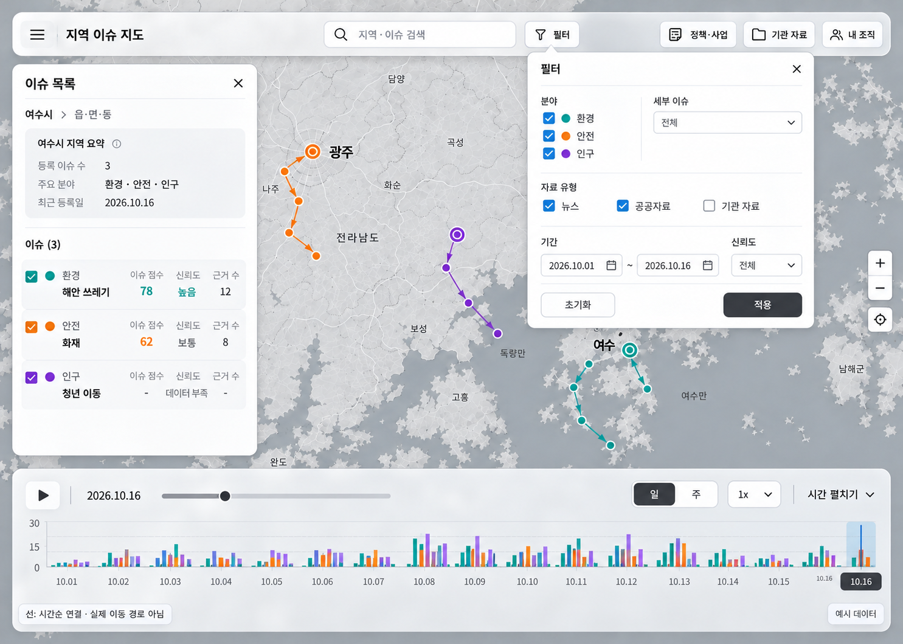
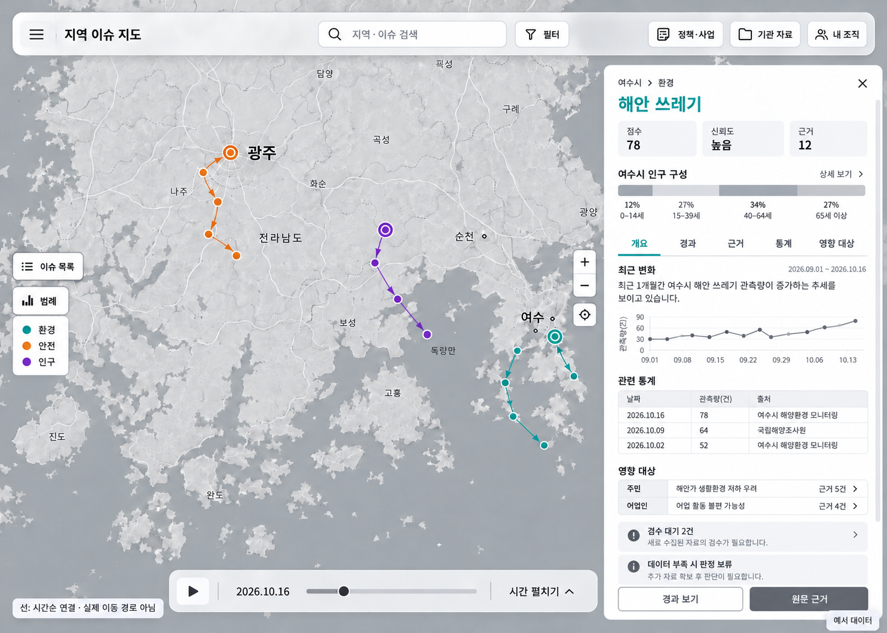
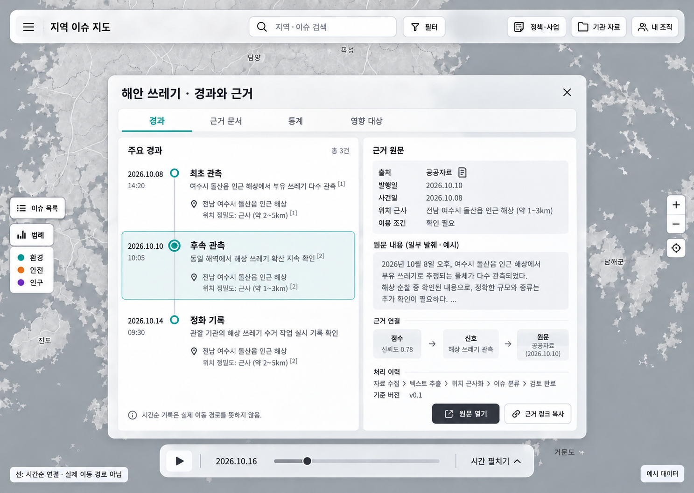
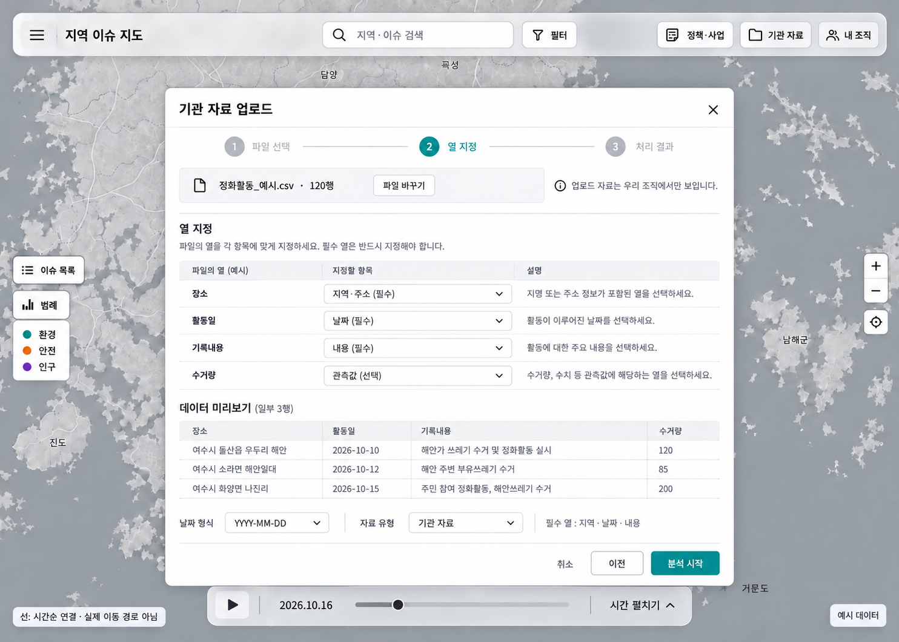
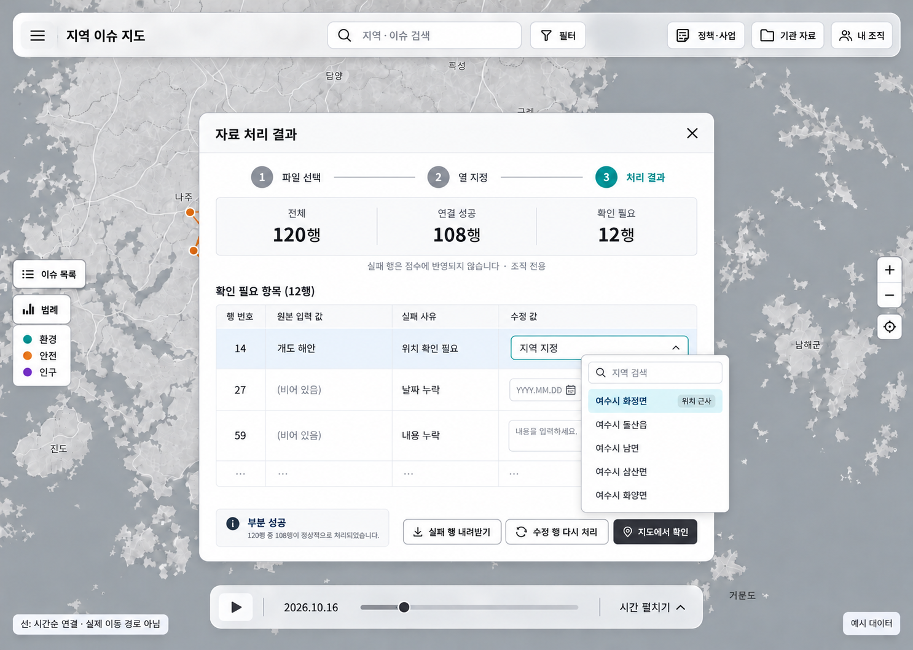
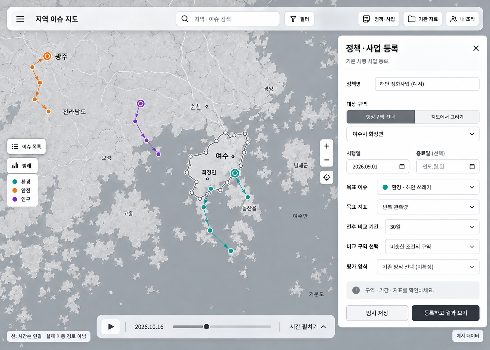
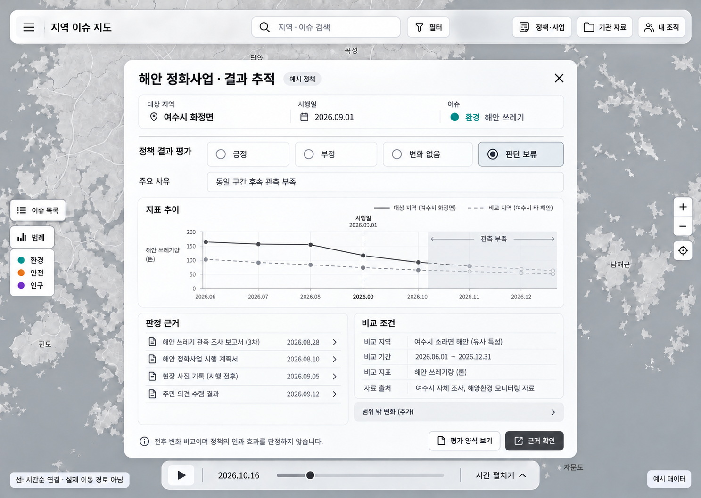
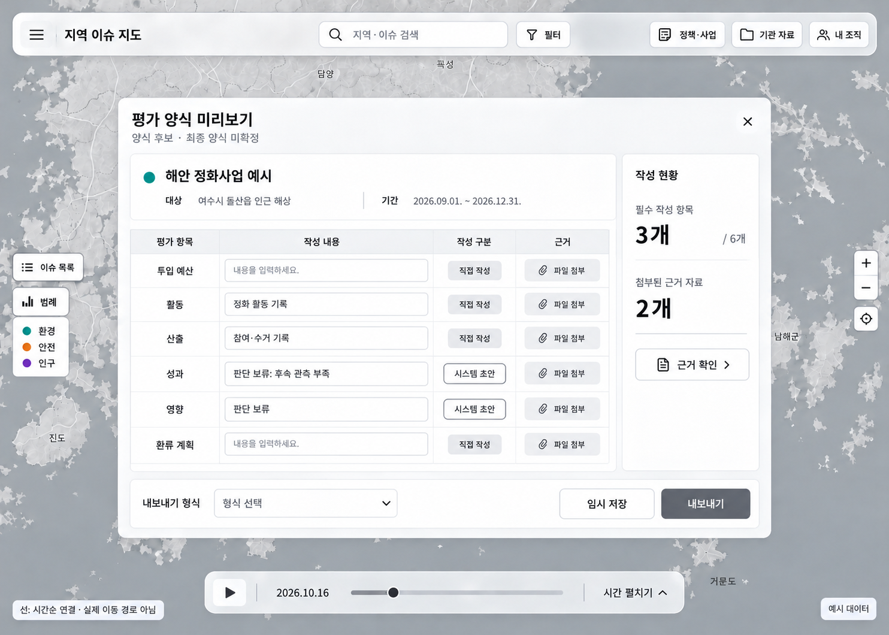
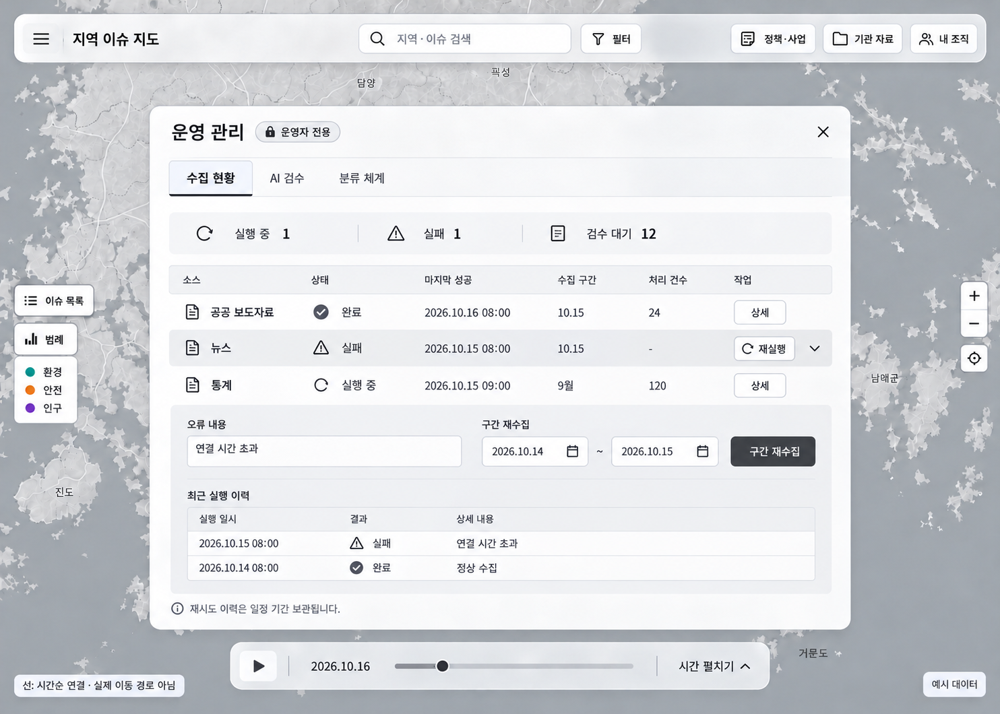
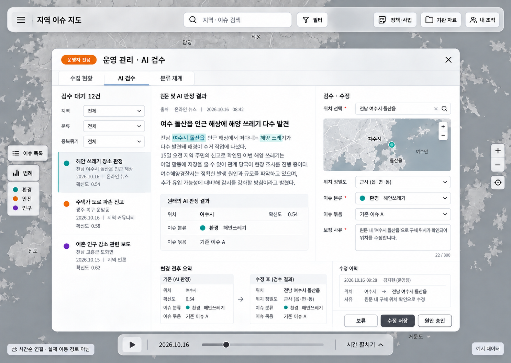

01 · 탐색 · 필터 · 시간
이슈 목록·필터·시간 재생을 펼친 상태. 필터 적용 후 지도와 목록을 함께 갱신합니다.

02 · 지역 · 이슈 · 상세
지역 요약, 점수·신뢰도, 추이, 통계, 영향 대상을 확인하는 상세 패널입니다.

03 · 경과 · 근거
경과의 각주를 선택하면 원문·출처·시점·처리 이력으로 이어집니다.

04 · 업로드 · 열지정
파일 선택 후 지역·날짜·내용에 해당하는 열을 지정합니다. 기관 자료는 조직 안에서만 보입니다.

05 · 업로드 · 결과수정
실패 행의 원인을 확인하고 수정·재처리합니다. 실패 행은 점수에서 제외합니다.

06 · 정책 · 등록
대상 구역·시행일·목표 이슈·지표·비교 조건·평가 양식을 등록합니다.

07 · 정책 · 결과
전후 및 비교 구역의 변화를 확인합니다. 근거가 부족하면 판단 보류로 표시합니다.

08 · 평가양식 · 내보내기
시스템 초안과 직접 작성할 항목을 구분합니다. 최종 평가 양식과 내보내기 형식은 미확정입니다.

09 · 운영 · 수집
수집 상태·마지막 성공·실패 원인·구간 재수집을 확인하는 운영 화면입니다.

10 · 운영 · AI검수
원문과 AI 판정을 비교해 지역·분류·이슈 묶기를 검수하고 변경 이력을 남깁니다.
